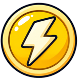

ElectricDragonTap a stage to read its story.
Sparkyx appears as a hovering purple orb with a faint white eye at its center and two thin filament tendrils trailing beneath it like roots searching for soil. It drifts in the thermal updrafts of Storm Spire, apparently weightless, humming at a frequency just below hearing. The orb is warm to the touch - not from the spire heat but from the dragon-fire compressed at its core, held in check by a thin shell of electric charge. The guardians of Storm Spire called it the Seed - convinced that every Sparkyx contains a whole dragon waiting for the right word to release it.
Field note: Sparkyx's central white eye never blinks - it tracks everything in 360 degrees simultaneously, rotating the pupil instead of the eye.
Lava Crater. Sparkyx and its family are found in the Lava Crater. See everyone who lives there.
Share a Bond Food that matches its types to become friends. Sparkyx loves:
A Bond Food is not a trick. It joins your spirit with the Kimuro's spirit, and only when it chooses you.
Print the Kimuro adventure packs: mazes, cards, a board game and Bond Mark medals.
See the printable packs